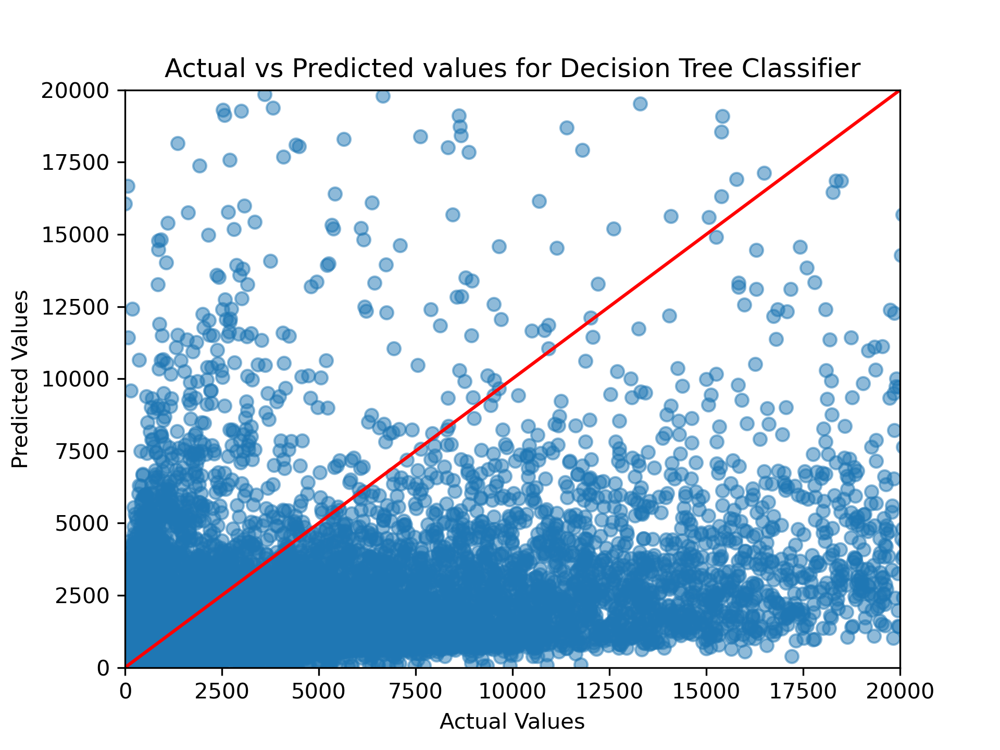

Machine Learning

Anime and Movies: Machine Learning Classification of Subreddits
In the vast and ever-expanding universe of Reddit, where countless subreddits coexist, the ability to classify posts accurately is crucial for both content curation and user experience. By distinguishing between ‘Anime’ and ‘Movies’ - two distinct categories with passionate followings - this classification project aims to streamline content discovery, enhance recommendation algorithms, and foster community engagement. As users navigate through the platform, accurately categorized posts ensure that they find the content that resonates with their interests swiftly. For content moderators and advertisers, such classification provides a clear understanding of discussion trends and audience preferences, enabling more targeted and effective engagement strategies. Ultimately, this machine learning endeavor seeks to contribute to a more personalized, organized, and engaging Reddit experience for every user.
Data Cleaning
Feature Engineering
The initial step in the data preprocessing pipeline involved enhancing the dataset with new features that could be crucial for the classification of Reddit posts.
Post Length Calculation The total length of each post was calculated by summing the lengths of the post’s title and text.
Time-Based Feature Extraction Time-related features were extracted from the ‘created_utc’ timestamp. These included the hour of the day, day of the week, day of the month, month, and year.
Media Presence Identification A boolean feature ‘has_media’ was created to indicate whether a post contains media.
Feature Selection The dataset was refined to include only relevant features for the classification task, ensuring a focused and efficient modeling process.
Text Preprocessing
Textual data from Reddit posts underwent several preprocessing steps to standardize and prepare it for machine learning analysis.
Combining Text Fields The ‘title’ and ‘selftext’ fields were combined into a single ‘body’ text field, consolidating all textual information into one comprehensive feature.
Handling Missing Values Rows with missing ‘domain’ values were removed to maintain data integrity and consistency.
Text Normalization The ‘body’ text was converted to lowercase, and newline characters and punctuations were removed. This normalization is crucial for reducing the complexity of text data, facilitating more effective machine learning analysis.
Text Vectorization
The processed text data was transformed into a numerical format suitable for machine learning models.
Tokenization and Stop Words Removal The body text was tokenized into individual words, and common stop words were removed to emphasize more meaningful content.
Feature Vector Creation The HashingTF method was utilized to convert the processed text into numerical feature vectors. The IDF (Inverse Document Frequency) was applied to rescale these vectors, highlighting significant terms for differentiating between ‘Anime’ and ‘Movies’.
Final Data Preparation
The concluding steps in data preparation involved schema adjustments and data type conversions, optimizing the dataset for the modeling stage.
Schema Adjustment and Cleanup Unnecessary columns were removed from the dataset, and the final schema was verified to include only pertinent features.
Data Type Conversion Boolean columns were cast to strings to align with the requirements of the machine learning algorithms in the subsequent stages.
Data Pre-Processing for Modeling
String Indexing Key categorical features such as ‘over_18’, ‘is_self’, ‘is_video’, ‘has_media’, and ‘subreddit’ were transformed using StringIndexer. This step converted categorical strings into numerical indices, making them suitable for machine learning models.
One-Hot Encoding The indexed categories were further encoded using OneHotEncoder. This process transformed the indexed categories into a binary vector representation, a necessary step for handling categorical data in many machine learning algorithms.
Vector Assembler A VectorAssembler was utilized to combine various feature columns into a single vector column. This included both the newly created feature vectors from one-hot encoding and the existing numerical features such as ‘score’, ‘num_comments’, ‘post_length’, ‘hour_of_day’, ‘day_of_week’, ‘day_of_month’, ‘month’, and ‘year’. This assembly created a unified feature vector essential for feeding into the machine learning models.
Pipeline Definition A Pipeline was defined incorporating all the stages of string indexing, one-hot encoding, and vector assembly. This approach streamlined the preprocessing steps and ensured consistency across the data.
Data Split train and test Following thorough data cleansing, the dataset was partitioned into training and testing sets with an 80-20 split.
Pipeline Execution The preprocessing pipeline was applied to the training and test data. This transformed the data according to the defined stages, ensuring that it was ready for model training and evaluation.
Model Training and Evaluation
Model Selection
We selected a Random Forest classifier to classify between Anime and Movie-related Reddit posts primarily because random first gives highest accuracy among all classification models and its robustness, particularly in scenarios involving large datasets with numerous variables. It can also automatically balance the data.
Model Training
Initially, we opted for simplicity and started with a Random Forest model, using its default parameters. This approach was somewhat like dipping our toes in the water to gauge the temperature. After training, the results we got were quite encouraging - not exactly groundbreaking, but definitely on the right track. This outcome provided a solid foundation for us to build upon and refine our model further.
|
|
|
|
|
|
The first try at using a Random Forest classifier to sort Reddit posts into ‘Anime’ or ‘Movies’ was a good start. The model worked alright, as shown by a score of 0.76 out of 1 on a test called the ROC curve, which measures how well the model distinguishes between the two categories. However, the model wasn’t perfect and often mixed up posts, especially mistaking ‘Movies’ posts for ‘Anime’. This tells us that while the model did an okay job, there’s still quite a bit of room to make it better by changing its settings.
The first results show that using the basic settings for the model isn’t the best for this job of telling Anime and Movie posts apart. The model could do a much better job if we adjust its settings, like how many decision trees to use, how deep these trees should go, and how many posts it should look at before making a decision. Changing these could make the model much better at correctly identifying posts.
To elevate our initial model, we delved into hyperparameter tuning. We experimented with a variety of settings for ‘numTrees’, ‘maxDepth’, and ‘maxBins’, testing different combinations. Ultimately,landed on the configuration that significantly enhanced our model’s accuracy and efficiency: numTrees=100, maxDepth=10, and maxBins=64. The model showed significantly better performance after hyperparameter tuning.
|
|
|
|
|
|
| Model | Accuracy Train | Accuracy Test | F1 Score Train | F1 Score Test | Precision Train | Precision Test | Recall Train | Recall Test |
|---|---|---|---|---|---|---|---|---|
| RandomForest Default | 0.676 | 0.675 | 0.642 | 0.642 | 0.760 | 0.760 | 0.676 | 0.675 |
| RandomForest Hyperparameters | 0.760 | 0.759 | 0.745 | 0.744 | 0.829 | 0.828 | 0.760 | 0.759 |
The Hyperparameter tuning for the Random Forest classifier yielded a significant improvement in the model’s performance for classifying Reddit posts into ‘Anime’ or ‘Movies’. By adjusting the number of trees (‘numTrees’), the depth of each tree (‘maxDepth’), and the number of bins (‘maxBins’), the model’s ability to correctly identify the categories has been notably enhanced.
The confusion matrix post-tuning presents a dramatic decrease in misclassified instances, particularly in distinguishing ‘Movies’ from ‘Anime’. Furthermore, the ROC curve, with an area under the curve (AUC) of 0.95, indicates a superior model performance in differentiating between the two classes as compared to the pre-tuned state, which had an AUC of 0.76. This stark contrast in the AUC values before and after tuning underscores the impact of fine-tuning hyperparameters.
Classifying Popularity: Machine Learning for Reddit Engagement Analysis
In the dynamic and diverse ecosystem of Reddit, where every submission vies for attention, being able to predict the popularity of a post holds immense value. The second model in this project endeavors to classify Reddit submissions as ‘popular’ or ‘not popular,’ serving a multitude of purposes. For content creators and marketers, understanding the elements that contribute to a post’s popularity can inform their strategy to capture the community’s interest more effectively. For the average user, this classification can enhance the personalization of their feed, bringing popular, engaging content to the forefront. Additionally, platform moderators can utilize insights from popularity predictions to better manage the influx of content and maintain the quality of user experience. This binary classification model, powered by machine learning, not only aims to decipher the attributes that propel a post to popularity but also to apply this knowledge in a way that enriches the Reddit landscape for all participants.
Data Cleaning
Feature Engineering
Along with the existing features, the dataset was enhanced with new features that could be crucial for the classification of Reddit posts.
To enhance the accuracy of predicting a post’s popularity, we introduced ‘Sentiment Score’ and ‘Emotion’ as new features, recognizing that the tone and emotional context of a post greatly influence user engagement. The sentiment score captures the overall positivity or negativity of the content, while the emotion feature taps into the specific feelings a post might evoke, both of which are key indicators of a post’s potential to resonate with and captivate the Reddit community.
Sentiment Analysis The ‘body’ text was analyzed using the Spark NLP sentiment analysis model (sentimentdl_use_twitter) to extract sentiment score.
Emotion Analysis The ‘body’ text was analyzed using the Spark NLP emotion analysis model (classifierdl_use_emotion) to extract different emotions.
All the other steps were the same as the above model.
Data Pre-Processing for Modeling
Target Variable Generation The ‘num_comments’ column was used to generate the target variable ‘is_popular’ by applying a threshold of 27 (mean number of comments). Posts with a score of 27 or above were classified as ‘popular’ while those with a score below 27 were classified as ‘not popular’.
Handling Class Imbalance The dataset was balanced by downsampling the majority class (‘not popular’) to match the minority class (‘popular’).
|
|
|
|
|
|
String Indexing Key categorical features such as ‘over_18’, ‘is_self’, ‘is_video’, ‘has_media’, and ‘subreddit’ were transformed using StringIndexer. This step converted categorical strings into numerical indices, making them suitable for machine learning models.
One-Hot Encoding The indexed categories were further encoded using OneHotEncoder. This process transformed the indexed categories into a binary vector representation, a necessary step for handling categorical data in many machine learning algorithms.
Vector Assembler A VectorAssembler was utilized to combine various feature columns into a single vector column. This included both the newly created feature vectors from one-hot encoding and the existing numerical features such as ‘sentiment_score’, ‘score’, ‘post_length’, ‘hour_of_day’, ‘day_of_week’, ‘day_of_month’, ‘month’, and ‘year’. This assembly created a unified feature vector essential for feeding into the machine learning models.
Pipeline Definition A Pipeline was defined incorporating all the stages of string indexing, one-hot encoding, and vector assembly. This approach streamlined the preprocessing steps and ensured consistency across the data.
Pipeline Execution The preprocessing pipeline was applied to the training and test data. This transformed the data according to the defined stages, ensuring that it was ready for model training and evaluation.
Model Training and Evaluation
Model Selection
For predicting whether Reddit posts will be popular or not, we started with a simple Logistic Regression model. This model was chosen for its ease of use and good performance with basic yes/no type questions, like predicting if a post will be popular. However, to deal with the large and complex data from Reddit, we later switched to using a Decision Tree classifier. This model is better for handling lots of different factors in the data and makes it easier to understand how it decides if a post will be popular.
Model Training
In the task of predicting the popularity of Reddit posts, we initially utilized a Logistic Regression model. This model, known for its straightforwardness and effectiveness in binary classification, served as a fundamental starting point. It yielded promising results, demonstrating high accuracy in training (93.41%) but a moderate accuracy in testing (75.11%). This discrepancy indicated that while the model performed well on familiar data, it was less effective with new, unseen data.
|
|
|
|
|
|
The initial Decision Tree model provided insightful outcomes. It showed a moderate level of accuracy in predicting post popularity, as evidenced by the ROC curve and other performance metrics. However, there were still instances of incorrect predictions, signaling the need for further model optimization.
To address this and capture the complexities of Reddit’s data more effectively, we transitioned to a Decision Tree classifier. The Decision Tree model, adept at handling diverse datasets, showed a more balanced performance with training accuracy at 87.44% and testing accuracy at 87.20%. This indicated a better generalization capability of the model on new data compared to the Logistic Regression model.
|
|
|
|
|
|
| Model | Accuracy Train | Accuracy Test | F1 Score Train | F1 Score Test | Precision Train | Precision Test | Recall Train | Recall Test |
|---|---|---|---|---|---|---|---|---|
| Logistic Regression | 0.934 | 0.751 | 0.934 | 0.750 | 0.934 | 0.751 | 0.934 | 0.751 |
| Decision Tree | 0.874 | 0.872 | 0.874 | 0.872 | 0.874 | 0.872 | 0.874 | 0.872 |
The comparison of these two models highlights the importance of choosing the right algorithm for specific data characteristics. The Decision Tree’s improved ability to generalize, as evidenced by the more consistent accuracy between training and testing, underscores its suitability for the dynamic and varied content on Reddit. This analysis demonstrates the value of model selection and tuning in the field of popularity prediction on social media platforms.
Predicting Submission Scores: A Machine Learning Approach to Forecasting Reddit Scores
In the busy world of Reddit, a post’s score, which is the total of its upvotes minus its downvotes, is really important for understanding how much users like the content. We’re looking at different things like what the post is about, when it was posted, and how users interact with it, to predict the score of a Reddit post. Being able to guess a post’s score helps us figure out what makes a post appealing to users. This is great for people who create content and those who manage the site, as it helps them know what their audience likes. We’re using advanced technology to figure out the secrets behind a successful Reddit post, aiming to make the platform even more engaging for its users.
Data Cleaning
The cleaning process for this model was similar to the previous model. The only difference was that we did not Vectorize (use TF-IDF) for the text data primarily because the focus of this model is different compared to previous models. Text vectorization techniques like TF-IDF are powerful for understanding and analyzing the content of text data, especially in tasks like classification where the text’s topic or sentiment is crucial. In predicting submission scores, the emphasis is likely on quantifiable metrics such as user interaction data (e.g., number of comments, time since posted) and post characteristics (e.g., length of the post, presence of links or media), which have a more direct and measurable impact on a post’s popularity as indicated by its score.
Data Pre-Processing for Modeling
String Indexing Key categorical features such as ‘over_18’, ‘is_self’, ‘is_video’, ‘has_media’, and ‘subreddit’ were transformed using StringIndexer. This step converted categorical strings into numerical indices, making them suitable for machine learning models.
One-Hot Encoding The indexed categories were further encoded using OneHotEncoder. This process transformed the indexed categories into a binary vector representation, a necessary step for handling categorical data in many machine learning algorithms.
Vector Assembler A VectorAssembler was utilized to combine various feature columns into a single vector column. This included both the newly created feature vectors from one-hot encoding and the existing numerical features such as ‘sentiment_score’, ‘num_comments’, ‘post_length’, ‘hour_of_day’, ‘day_of_week’, ‘day_of_month’, ‘month’, and ‘year’. This assembly created a unified feature vector essential for feeding into the machine learning models.
Pipeline Definition A Pipeline was defined incorporating all the stages of string indexing, one-hot encoding, and vector assembly. This approach streamlined the preprocessing steps and ensured consistency across the data.
Pipeline Execution The preprocessing pipeline was applied to the training and test data. This transformed the data according to the defined stages, ensuring that it was ready for model training and evaluation.
Model Training and Evaluation
Model Selection
For predicting Reddit post scores, we first used Linear Regression. This method is straightforward and good for starting out, as it helps us see how different things about a post might affect its popularity. But Reddit’s data can be quite complex, so we then switched to using a Decision Tree Regressor. This method is better at handling the tricky and detailed patterns found in social media data, like when posts are made and how people interact with them, giving us a clearer picture of what makes a post score high or low.
Model Training
In analyzing the performance of the two models employed for predicting Reddit post scores, Linear Regression and Decision Tree, distinct outcomes were observed. The Linear Regression model achieved a Root Mean Square Error (RMSE) of 1351.79 on training data and 1385.97 on testing data, with R-squared (R2) values of 0.25 and 0.3, respectively. These figures suggest moderate accuracy with a slightly better fit on the testing data. On the other hand, the Decision Tree model showed a slightly lower RMSE of 1324.6 in training, but a higher RMSE of 1447.39 in testing, indicating it was more accurate in training but less so with new data. The R2 values were 0.28 for training and 0.29 for testing, closely mirroring those of Linear Regression. Overall, while both models offered insights into the factors influencing post scores, their effectiveness was somewhat limited, pointing to the need for further refinement or exploration of more sophisticated models to enhance prediction accuracy.
These RMSE scores depict how good our model is. The lower the RMSE, the better the model is at predicting the score of a post. The RMSE for the Linear Regression model is 1351.79 on the training data and 1385.97 on the testing data. The RMSE for the Decision Tree model is 1324.6 on the training data and 1447.39 on the testing data. Such high RMSE does not always mean that the model is performing bad. The RMSE also depends on the range of the target variable. An model with RMSE of 1200 when the target variable range is 100-200 is a bad model. But an RMSE of 1200 when the target variable range is 10000-20000 is a good model. In our case, the target variable range is 0-20000. So, the RMSE of 1351.79 for Linear Regression and 1324.6 for Decision Tree are not bad.

| Model | RMSE Train | RMSE Test | R2 Train | R2 Test |
|---|---|---|---|---|
| Linear Regression | 1351.79 | 1385.97 | 0.25 | 0.28 |
| Decision Tree | 1324.6 | 1447.39 | 0.28 | 0.22 |
Trying to predict the scores of Reddit posts, which are calculated by subtracting downvotes from upvotes, turned out to be quite tough and the results weren’t as good as hoped. One big issue is that the same score can mean very different things. For example, a score of 1 could be because only one person liked the post and nobody disliked it, or it could be that 10,000 people liked it but 9,999 didn’t. This makes it really hard to predict what’s going on with a post just based on its score.
Also, a score doesn’t always tell the whole story about how users feel about a post. A post with lots of likes and dislikes probably means people have strong opinions about it, while a post with a few likes might have just not been seen by many people. This kind of difference is a big challenge for models like Linear Regression and Decision Trees. These models find it difficult to understand the real reasons behind a post’s score, especially because a score comes from both likes and dislikes. So, while these models can give some general ideas, they aren’t very good at accurately guessing a Reddit post’s score due to how complex and unclear the scoring can be.